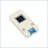

Things used in this project
Hardware components |
|
| SwitchBot Lock Pro + Keypad Touch | |

|
DFRobot UNIHIKER - IoT Python Programming Single Board Computer with Touchscreen |
| M5Stack CoreS3 - ESP32S3 - IoT Development Kit | |

|
Blues Notecard (Cellular) |

|
Blues Notecarrier A |

|
Seeed Studio XIAO ESP32S3 Sense |
| M5Stack Mini RFID Unit RC522 Module Sensor | |
|  | M5Stack Finger Print Unit FPC1020A |
| Adafruit Ultra Tiny USB Camera with GC0307 Sensor | |
| SparkFun Qwiic micro:bit Breakout (with Headers) | |

|
Seeed Studio Grove Shield for Seeeduino XIAO - with embedded battery management chip |
Software apps and online services |
|

|
Arduino IDE |
| Microsoft VS Code | |
Hand tools and fabrication machines |
|
| Anycubic Kobra 2 | |
Story
This project is an entry for the Build2gether 2.0 contest for Track 1: Accessible HOME & TOOLS.
Preface
This has been an unexpectedly difficult summer for me. We've had weeks of extreme heat and poor air quality which created an unhealthy work environment. I then had a subconjunctival hemorrhage (bleed) in my right eye and have been experiencing persistent vision issues since then. I realized about 5 weeks ago that I would not be able to complete the project that I proposed for this contest. The contest admin suggested that I could try to submit a simpler project.
I did get through the initial planning and feedback stages and received the superbox hardware and purchased additional hardware, so in the spirit of participation and gratitude to the contest sponsors I am going to submit as much of a descoped project as I can complete.
I'll cover my original proposal and the simpler project in the Introduction.
Introduction
My original project title was Secure Voice Controlled Entry Lock .
Here was the problem statement and proposed solution:
PROBLEM: Mobility impaired individuals encounter difficulty accessing secured (locked) areas due to the inability to reach or manipulate the locks. This could be caused by the proximity limitations caused by larger assistive such as wheelchairs/walkers or there could be a more direct problem of not being able to manually manipulate the lock mechanism.
SOLUTION: I would build a device to either request access or directly provide access using voice control. This would only work with electronic locks. The Seeed ESP32S3 would provide the voice control and request access using the Blues Notecard for cellular/WiFi requests or direct access the lock using its own BLE/WiFi radios.
FEEDBACKFROM CONTEST MASTERS ::
This is a great idea, I can use this all the time. I think it would be important for multiple security features. Having a distinctive voice profile that others cannot use would be one good option. Also having a secondary BLE key or something that’s attached to the wheelchair so that you ensure both the person and the wheelchair are together so that the device can’t be removed from. Lastly being able to easily recalibrate or retrain would be helpful. It is also essential that if somebody is dependent on this device, it is robust enough notifies the user when the batteries get low, and has some amount of longevity beyond that. Having it rechargeable via USB may allow it to even be plugged into the wheelchair battery system. You just don’t want something like this to malfunction or run out of batteries and have someone stuck out in the rain or something."
INITIAL CONCEPT:
After receiving the super box hardware and reviewing the feedback I decided that I would build a compact control unit with BLE communication to the electronic lock. The unit would mount on the arm of a wheelchair and receive power using a USB charging adapter that plugged into the wheelchair battery charging port.
The control unit would interface with multiple sensors to provide secure user authentication to operate the lock.
- Voice control
- Button control
- Facial recognition
- Fingerprint recognition
- RFID card verification
- BLE communication for primary lock control
- WiFi communication for local backup
- Cellular communication for emergency and status alerts
I chose to use the DFRobot Unihiker as the central controller as it integrates a quad-core Linux SBC with 240x320 capacitive touch display, microphone, imu, WiFi/BLE radios, and I2C and UART interfaces for external sensors.
My proposed configuration is shown below.
- Unihiker
- 640x480 USB webcam
- RFID reader
- Fingerprint scanner
- Blues Notecard for cellular
ALTERNATE CONCEPT:
I also had an alternative configuration in mind that would use a M5Stack CoreS3 as the controller. The CoreS3 has most of the capabilities as the Unihiker but it is based on a dual core MCU so it would be appropriate for a battery operated solution that could be used on a more light weight mobility device like a walker. It also has an integrated 640x480 camera and an RTC.

REDUCED SCOPE:
Unfortunately, as I mentioned in the preface, my personal issues prevented me from being able to pursue my original plan even though I did get all the necessary hardware. Also, I had unanticipated problems with the Unihiker I2C and UART interfaces which made using them difficult. I had selected the Unihiker because I thought that the Debian Linux OS would be a good development environment for me since I have done a lot Python based projects on various Raspberry Pi SBCs.
The Unihiker uses an MCU coprocessor to handle its GPIO and requires using the Pinpong library to access the pin interface. The standard Linux serial devices are not available so the usual Python libraries for UART and I2C won't work. DFRobot has ported a number of Arduino libraries to Pinpong but the devices (Notecard, WS1850S, F1020SC) that I wanted to use were not included so I would have had to port the libraries myself which I did not have time for. The I2C documentation was also lacking for Pinpong. The GPIO pin control works well so I used a hybrid approach to interface the Blues Notecard. I used a Xiao ESP32S3 to provide the I2C interface which allowed me to use the Arduino Notecard library. I toggled the Unihiker GPIO pins to signal interrupts on the Xiao to send notes to the Notecard,
I attempted to add the Fingerprint scanner and RFID reader to the Xiao but had compilation issues with the Arduino libraries which I did not have time to resolve.
So, I ended up just running face recognition on the Unihiker to unlock/lock the SwitchBot lock and the Xiao/Blues interface to send status to the Blues Notehub.
SwitchBot Lock Pro
The electronic lock that I am using is the SwitchBot Lock Pro which is a "retrofit" lock that can be added to most existing deadbolts. It is battery operated and is controlled using BLE.
I built a mock-up of an entry door deadbolt with the SwitchBot Lock Pro attached. This allowed me to do all my development work without interfering with use of the actual entry door and made it easier to monitor and document the lock operation.
SwitchBot has an IOS app to interface its various "bots" including the Lock Pro. Here is a short demo using the app to unlock and unlock the deadbolt.
The next step was to create a Python program to control the lock. I am using VSCode via a remote SSH interface to the Unihiker for software development.
SwitchBot has two APIs to interface its "bots" - Web based and BLE. The Web based interfaces through the SwitchBot cloud and requires a SwitchBot hub to connect to the lock. The BLE is a direct connection which is obviously more responsive and more reliable. Unfortunately, I have not been able to get the BLE API to work.
I can see and connect to the lock using the nRF Connect app on my iPad.
The lock is not advertising but I can see the Service and Characteristic UUIDs that I need for control.
I can also use the BLE API to verify that I can see those services using a Python program but I'm unable to get it to lock or unlock.
I then tried the Web API and was successful in operating the lock.
There is an approximate 5 second lag between the command and action due to the delay through the cloud and local hub as shown below.
I have not seen an example of the Lock Pro being used with the BLE API so I'll need to use the Web API for now.
Facial Recognition
Now that I can programmatically operate the lock, I need to use face recognition to unlock the SwitchBot lock. Luckily DFRobot already has a tutorial to train and use a face recognition model on the Unihiker - Intelligent Access Control with Facial Recognition .
There are 3 Python programs required.
1) faceRegistration.py - use the webcam to capture and label 50 face images associated with a particular face id
2) faceModelTraining.py - trains model using a Haar-Cascade Frontal Face Classifier and LBPH (Local Binary Pattern Histogram) algorithm to associate ids with labeled images
3) faceRecogniton.py - uses model to perform real-time face detection and recognition
I trained the model looking into the camera, so it does not recognize me if I look down or away.

A quick demo using face recognition to unlock the deadbolt. The delay in lock response after the face is recognized is quite annoying. I really need to figure out why the BLE API isn't working.
Cellular Communication
I am using a Blues NBGL Notecard with a Notecarrier A to provide the cellular interface. The Notecard is a device-to-cloud data pump that transmits secure cellular data to the Blues Notehub. I've used Notecards on quite a few projects and have found then to be very reliable and easy to deploy. I won't go through the detail of setting up projects on the Notehub as Blues has very comprehensive documentation.
I created a project called Build2gether 2.0 on the Notehub. Here is a quick view of the device on the dashboard:
Blues has excellent Notecard libraries for Python and Arduino IDE. The great feature of the message (note) interface is that all the transactions are done using JSON objects.
Here is the interrupt service routine from the Arduino program that constructs and sends the face recognition note to the Notecard from the Xiao when a Unihiker interrupt is received..
void IRAM_ATTR handleInterrupt() {
// Enqueue the measurement to the Notecard for transmission to the Notehub,
// adding the "sync" flag for demonstration purposes to upload the data
// instantaneously. If you are looking at this on notehub.io you will see
// the data appearing 'live'.
J *req = notecard.newRequest("note.add");
if (req != NULL)
{
JAddBoolToObject(req, "sync", true);
J *body = JAddObjectToObject(req, "body");
if (body != NULL)
{
JAddNumberToObject(body, "lockStatus", "Unlocked");
JAddNumberToObject(body, "faceID", "Ralph");
}
notecard.sendRequest(req);
}
Serial.println("Interrupt detected!");
}And the event data that is received from the Notecard in the Notehub project dashboard.
A more zoomed in view:
The Notehub has a great feature called routes that allows device data to be forwarded to an external APIs like MQTT, Webhooks, or Twilio. I have not implemented this feature yet but I've used it on other projects to send SMS and email alerts and do data/status logging via MQTT.
Summary
I would like to thank the sponsors, admins, and Contest Masters for the opportunity to participate in the Build2Gether 2.0 contest. I regret that my personal circumstances prevented me from being able complete the project that I had intended. I do appreciate the feedback that I received on my original proposal. And I apologize for the lack of comprehensive documentation.
I hope that when/if my issues resolve that I might be able to publish a more complete project later or at the very least do some smaller projects with some of the unused hardware that I received.